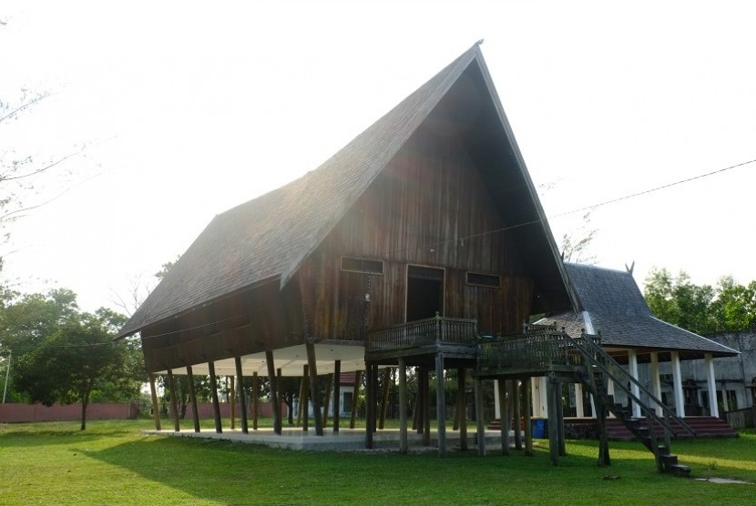
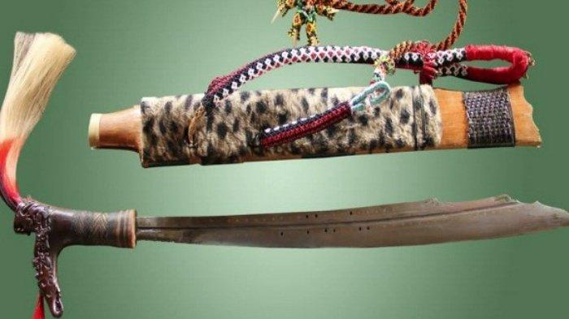

Suku Dayak
Suku Dayak adalah kelompok masyarakat etnis asli Kalimantan yang telah menghuni pulau ini sejak zaman dahulu. Suku Dayak dikenal dengan keramahannya terhadap masyarakat setempat dan tamu. Mereka memiliki keanekaragaman budaya, dari segi bahasa, tradisi, hingga arsitektur bangunan. Suku Dayak memiliki 268 sub-suku yang dibagi menjadi 6 rumpun yaitu Rumpun Punan, Rumpun Klemantan, Rumpun Apokayan, Rumpun Iban, Rumpun Murut, dan Rumpun Ot Danum. Masing-masing sub-suku dan rumpun Suku Dayak memiliki adat, budaya, dan tradisi yang hampir serupa.
Suku Dayak juga memiliki kepercayaan Kaharingan, tempat tinggal Betang atau Lamin, rajah tubuh atau tato, seni ukir, dan tindik. Kata “suku” artinya kaki, yang mengandung makna bahwa setiap manusia berjalan dan berdiri di atas kaki masing-masing untuk mencapai tujuan sesuai dengan kepercayaan dan keyakinannya masing-masing. Kata “Dayak” berasal dari kata “ayak” atau “ngayak” yang artinya memilih atau menyaring.
Rumah betang
Rumah betang adalah rumah adat suku Dayak yang terdapat di seluruh Kalimantan. Rumah betang memiliki ciri khas berupa bentuknya yang memanjang lebih dari 100 meter, menggunakan struktur kayu, dan ditempati suku Dayak secara komunal. Rumah betang juga memiliki fungsi untuk menjaga penghuni rumah dari segala macam bahaya, seperti banjir, binatang buas, dan orang-orang jahat.
Rumah betang juga memiliki makna filosofis, seperti tentang tata cara mengelola sistem kemasyarakatan. Filosofi rumah betang diantaranya adalah hidup rukun dan damai, bergotong royong, menyelesaikan perselisihan dengan damai dan kekeluargaan, dan menghormati leluhur.
Senjata Mandau
Mandau adalah senjata tradisional Suku Dayak yang digunakan dalam peperangan, upacara adat, dan ritual keagamaan. Mandau melambangkan kesiapsiagaan, keberanian, dan semangat juang dalam membela tanah air, harkat, dan martabat. Mandau juga memiliki silsilah keturunan pemakainya yang disimbolkan dengan patung-patung totem manusia laki-laki dan perempuan yang di gantung/disertakan pada mandau.
Mandau yang disarungkan dalam kumpang biasanya diikatkan di pinggang dengan jalinan rotan. Mandau terbang adalah salah satu jenis mandau yang memiliki ilmu kanuragan dan kekuatan magis yang luar biasa. Mandau terbang terdiri dari dua bagian, yaitu bilah dan sarungnya.